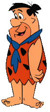

Why do we call our Italian Steak Sandwich a Fred?
Actually the name originally came from a customer.
It all started in the early fifties when a customer
of ours said that our Italian Steak Sandwich was big
enough for Fred Flintstone to eat. We thought this
was pretty remarkable since the character of Fred
Flintstone hadn't even been invented yet. Over the
years the name "Fred" caught on and to this day our
customers still come in and say, "Gimme a Fred".
Fred Enjoying a Fred

Close Window